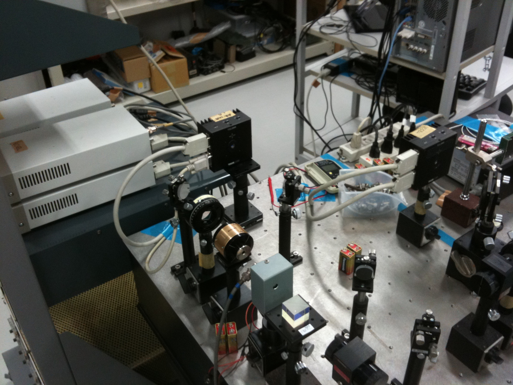
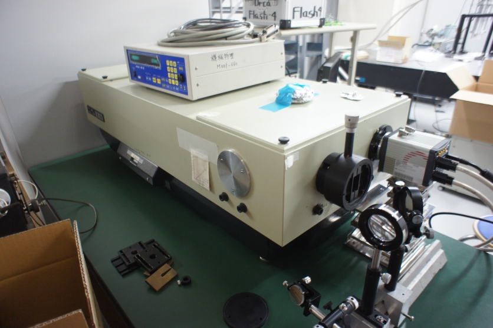
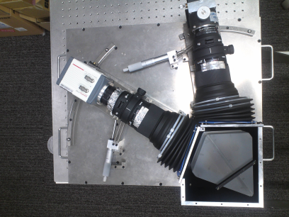
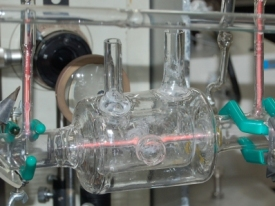
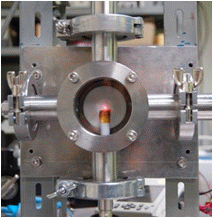
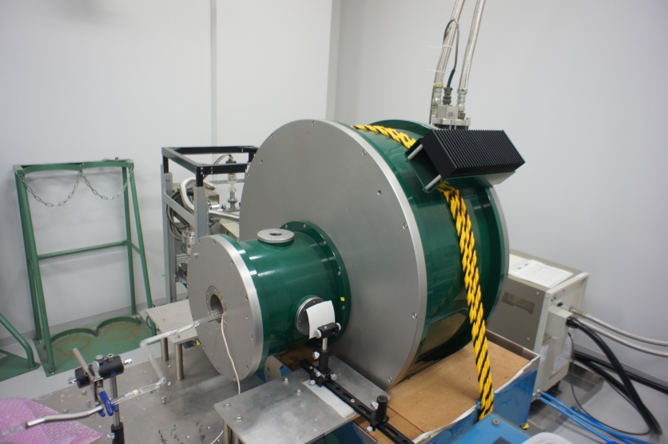
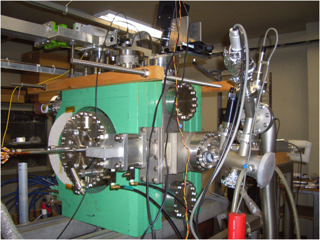
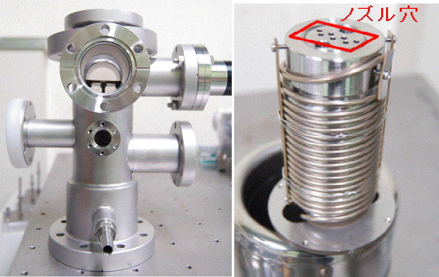

実験施設
ピコ秒チタンサファイアレーザー

Spectra Physics Tsunami 3950 (波長720-850 nm，パルス幅 1 ps)
ピコ秒時間スケールの現象観測や波長可変特性を利用した固体の光物性測定に利用しています．
ナノ秒YAGレーザー，色素レーザー
Spectra Physics GCR-100 (波長532 nm，パルス幅 5ns) + ELTO LT1233
レーザ誘起蛍光法によるプラズマ中の希ガス原子の偏極緩和測定に利用しています．
サブナノ秒窒素レーザー，色素レーザ
宇翔 KEN-X (波長337.1 nm, パルス幅 700 ps) + 自作色素レーザ
大気圧下でのレーザ誘起蛍光測定などサブナノ秒時間スケールの現象を測定するために利用しています．
半導体レーザ
TOPTICA DFB + THORLABS 温度・電流コントローラ
ULM Photonics VCSEL + THORLABS 温度・電流コントローラ
大気中の酸素分子やプラズマ中の希ガス原子の吸収分光測定に利用しています．
高分解分光器
Jobin-Yvon Horiba THR1000 (焦点距離1 m，回折格子2400 本/mm)
日本分光 CT100-CP (焦点距離1 m，回折格子3600 本/mm)
プラズマからの発光スペクトル線形状を詳細に測定するために利用しています．
エシェル分光器

自作 (焦点距離0.3 m，回折格子46.1 本/mm)
高波長分解能〜0.05 nmで広波長帯域390-780 nmのスペクトルを同時に測定することが可能な分光器です．プラズマ中の重金属や分子スペクトルの測定に利用しています．
超高ダイナミックレンジ分光器
自作（焦点距離0.3 m, 回折格子4000本/mm）
高分解能〜0.02 nm, 高スループット〜30％，高ダイナミックレンジ〜105でBalmer-α線の計測ができる分光器です．高温プラズマ中の水素原子輸送の研究に利用しています．
温度可変グロー放電装置
自作 (ガラス製，低圧グロー放電)
3重管構造になっており広範囲の温度制御が可能な放電装置です．両端のブリュースタ窓からレーザを入射し，プラズマ中の原子のレーザ誘起蛍光を測定しています．
マイクロホローカソードグロー放電装置
自作 (大気圧グロー放電)
広島大学プラズマ基礎科学研究室と共同で大気圧プラズマの研究を行っています．原子の発光・吸収スペクトル測定による原子や電子の温度・密度測定，原子の偏極緩和測定を行っています．
超電導マグネット + グロー放電装置
Cryogenic 1721 (無冷媒式)
自作 (ガラス製，低圧グロー放電)
最大7 Tの磁場を発生することができます．プラズマ中の原子分子発光線への磁場効果を観測しています．
カスプ磁場電子サイクロトロン共鳴放電装置
自作 (2.45 GHzマイクロ波放電)
エネルギー科学研究科プラズマ物性物理学研究室と共同でプラズマ中の電子速度分布関数の非等方性に関する研究を行っています．
極低温冷凍機
ナガセテクノエンジニアリング (V24SC6LSCP)
サンプルを液体ヘリウム温度(約4 K)まで冷却することができます．亜塩化銅の光物性研究に利用しています．
熱リチウム原子ビーム源
自作
固体リチウムを加熱して方向可変のスラブ状リチウム蒸気ビームを生成できます．プラズマ中の電子密度や電子速度分布関数の測定に利用しています．
機械学習用計算機サーバ
自作
GPUを2枚搭載した機械学習用の計算機サーバです。 使いやすさを念頭に置いた設計になっており、研究室のローカルPCと同等の使用感で高速な計算が可能となっています。 主な使い方は こちら を参考にしてください。